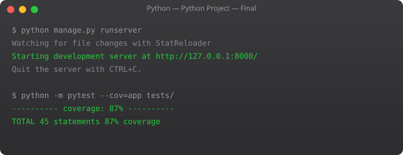

You have made it to the final part of the Python series. Everything before this was about the language. This part is about the craft — how professional Python developers set up, organize, and manage real projects. This is what separates someone who "knows Python" from someone who can ship production-ready code.
Imagine you have two projects. Project A needs Django 3.2. Project B needs Django 4.2. If you install everything globally, they will conflict. Virtual environments solve this by giving each project its own isolated Python environment with its own packages.
# Create a virtual environment
python -m venv venv
# Activate it (Linux/Mac)
source venv/bin/activate
# Activate it (Windows)
venv\Scriptsctivate
# Your prompt changes: (venv) suraj@ubuntu:~/project$
# Now install packages — they stay inside this venv
pip install flask requests pandas
# Deactivate when done
deactivate# Save all installed packages to requirements.txt
pip freeze > requirements.txt
# Anyone can recreate your environment with:
pip install -r requirements.txtNever hardcode secrets — API keys, passwords, database URLs — in your code. Use environment variables:
DATABASE_URL=postgresql://localhost/mydb
SECRET_KEY=your-very-secret-key-here
API_KEY=sk-abc123xyz
DEBUG=Truefrom dotenv import load_dotenv
import os
load_dotenv() # Load .env file
db_url = os.getenv("DATABASE_URL")
secret = os.getenv("SECRET_KEY")
print(f"Connecting to: {db_url}")Always add .env to your .gitignore — never commit secrets to version control.
my_project/
├── src/
│ ├── __init__.py
│ ├── main.py
│ ├── models/
│ │ └── user.py
│ ├── utils/
│ │ └── helpers.py
│ └── api/
│ └── routes.py
├── tests/
│ └── test_main.py
├── .env # Secrets (not in git)
├── .gitignore
├── requirements.txt
├── README.md
└── Dockerfilevenv/
__pycache__/
*.pyc
.env
*.log
.DS_Store
dist/
build/
*.egg-info/You have completed the Python foundation. Here is what to explore next based on your goals:
The most important next step is to build something real. Pick a small project that solves a problem you actually have and build it using what you have learned. Nothing in this series matters as much as the first project you build yourself.
Thank you for following the SRJahir Tech Python series. Keep learning, keep building.
Learning from common pitfalls saves hours of frustration. Here are the mistakes most beginners make in this area and how to avoid them.
The first mistake is trying to memorize syntax before understanding logic. Python syntax is simple — you could memorize it in a day. But if you do not understand why you are writing what you are writing, you will not be able to adapt when things change or when a problem looks slightly different. Always ask: what problem does this solve?
The second mistake is writing very long functions or very long scripts without breaking them into logical units. Real professional code is made of small, focused pieces that each do one thing well. The moment your code does two or three unrelated things in one block, it is time to split it up.
The third mistake is not reading error messages. Python's error messages are actually quite good. They tell you the file, the line number, the type of error, and often a description. Read the entire error before searching online. The answer is usually right there.
In real codebases, every concept from this tutorial series appears constantly. Backend web applications built with Flask or Django use functions, classes, data structures, and error handling throughout every route and service. Data pipelines use loops and comprehensions to process thousands of records efficiently. CLI tools use argument parsing, file handling, and process management. DevOps automation scripts combine shell integration with Python logic to orchestrate deployments, monitor systems, and handle alerts.
The concepts that feel abstract right now will click into place the moment you start building something real. That is why the best way to learn is to pick a small project that solves a problem you actually have — even something simple like a personal expense tracker or a file organizer — and build it using everything you have learned so far.
Before moving to the next part, write a small program that uses what you learned in this section. Do not copy from anywhere. Start with a blank file and build it from memory. The struggle is the learning. If you get stuck, read the code examples again — do not just copy them. Understand each line, then close the examples and write the program yourself. This is how programming actually sticks.
In professional Python projects, tracking and sharing your project's dependencies is essential. The traditional approach uses a requirements.txt file — a plain text list of package names and versions that can be installed with pip install -r requirements.txt. Generate this file from your current environment with pip freeze > requirements.txt. Modern Python projects increasingly use pyproject.toml — a more comprehensive project configuration file that supports dependency specification, build configuration, and tool settings in a single standardized location. Understanding both formats is important since you will encounter both in real codebases.
Well-organized Python projects follow consistent structural conventions that make them easier to navigate, test, and share:
my_project/
├── src/
│ └── my_package/
│ ├── __init__.py
│ ├── main.py
│ └── utils.py
├── tests/
│ ├── __init__.py
│ └── test_main.py
├── .env # Environment variables (never commit this)
├── .gitignore # Tells git what to ignore
├── requirements.txt # Project dependencies
├── README.md # Project documentation
└── pyproject.toml # Project configurationThe __init__.py files mark directories as Python packages. The separation of source code (in src/) from tests (in tests/) is a widely adopted convention. Keeping environment-specific configuration in .env files (and never committing them to version control) prevents accidentally exposing secrets.
Having completed this twelve-part tutorial series, you have covered the core of the Python language. Your next steps depend on your goals: for web development, explore Flask or Django. For data science and machine learning, explore NumPy, pandas, and scikit-learn. For automation and DevOps, explore the os, subprocess, and boto3 (AWS) libraries. For API development, explore FastAPI. In all cases, the path forward is building real projects. The skills you have learned here are the foundation — the application comes from building things that matter.